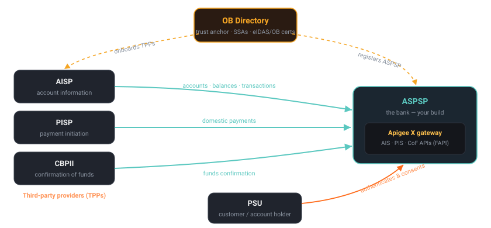

4.1 — The OB trust framework & OBIE roles
Bottom line
UK Open Banking is a regulated trust framework, not a protocol you invent. Four roles — ASPSP (you, the bank), AISP, PISP, CBPII — are onboarded by the OB Directory, which issues each participant a machine identity: eIDAS / OB certificates (an OBWAC transport cert and an OBSeal signing cert) plus a signed Software Statement Assertion (SSA) describing the TPP. Your gateway's entire job in Parts 4–5 is to enforce this framework at the edge. This session is the map; everything after is enforcement.
Why this exists
When you build a Spring API for an external partner, you decide who the partners are and what credentials they carry — you run the client registry, you issue the keys, you write the onboarding form. Open Banking takes that decision away from you. In the UK, a central authority (originally OBIE, now operated as the Open Banking Directory) decides who is allowed to call your bank's APIs, vets them, and issues their identity. You do not onboard a fintech; you trust the Directory's word that this fintech is a real, authorised TPP.
That inversion is the whole point of a trust framework. A bank cannot individually KYC every budgeting app and accounting tool in the country, and a fintech cannot integrate separately with every bank's bespoke onboarding. So the ecosystem agrees on a shared trust anchor — the OB Directory — and a shared identity format — eIDAS-based certificates with OB-specific roles encoded in them. Once you trust the Directory's issuing CA, you trust everyone it vouches for, and you reject everyone it doesn't.
For you, the ASPSP (Account Servicing Payment Service Provider — the bank that holds the customer's account), this means your gateway must do two things you've never had to do in Spring: validate that an incoming caller presents a cert chained to the OB issuing CA, and read the role that cert (and the TPP's SSA) authorises — AISP, PISP, or CBPII — to decide what they may even attempt. Get the trust framework wrong and you've either locked out legitimate TPPs (a regulatory breach) or let an unvetted party touch customer accounts (a much worse one).
Spring Boot bridge
Be honest: this is a regulated domain model, not a Spring concept. There is no @EnableOpenBanking. What you can map is the shape of the trust:
| Open Banking concept | Closest thing you've built in Spring |
|---|---|
| OB Directory (central registry + trust anchor) | A RegisteredClientRepository — except run by an industry body, not you, and you can't edit it |
| OBWAC transport cert | The client cert in an mTLS KeyStore/TrustStore for partner connections |
| OBSeal signing cert | The public key you'd load to verify a partner's JWS-signed payloads |
| SSA (Software Statement Assertion) | A signed JWT describing a registered client — like an OIDC software statement (RFC 7591) |
| AISP / PISP / CBPII roles | Authorities/scopes — but assigned by the regulator and encoded in the certificate, not granted by you |
The mechanics (mTLS truststores, JWS verification, scope checks) are all things you know. What's new is that you don't own the identity provider — the Directory does — and the roles are legally defined.
Where the analogy breaks
In Spring you are the authority: you decide who's registered and what they can do. In Open Banking you are a relying party. You can't add a client, can't grant a role, can't override a revocation — you can only check certificates against the Directory's CA and honour what the SSA and certs assert. Worse, the role is dual-encoded: it appears both in the OB certificate (as policy OIDs / roles) and in the SSA's software_roles claim, and a single TPP can hold several roles at once. Treating "AISP" as one scope you grant, the way you'd add ROLE_PARTNER in your own authz, misses that the role is an externally-issued, certificate-bound fact you merely verify — and that a payment-initiation call from an AISP-only TPP must be refused no matter what token it waves at you.
The concept

The four roles, precisely:
- ASPSP — the Account Servicing PSP: the bank holding the account. This is you. You expose the AIS (account information), PIS (payment initiation), and CoF (confirmation of funds) APIs, and you authenticate the PSU (Payment Service User — the customer).
- AISP — Account Information Service Provider: reads accounts, balances, transactions on the PSU's behalf. Read-only.
- PISP — Payment Initiation Service Provider: initiates payments out of the PSU's account. Write — the high-risk role.
- CBPII — Card-Based Payment Instrument Issuer: asks one question — "are there funds?" — via the confirmation-of-funds API. Yes/no, no detail.
Collectively AISP/PISP/CBPII are TPPs (Third-Party Providers). The OB Directory is the registry and trust anchor: it vets each TPP, issues its OBWAC (transport, used in mTLS) and OBSeal (signing, used for JWS) certificates from the OB issuing CA, and publishes a signed SSA carrying the TPP's software_client_id, software_redirect_uris, org_id, and software_roles. Your gateway trusts the OB root + issuing CA, so it can validate any TPP's transport cert without ever pre-registering that individual TPP.
The trust handshake your gateway runs on every call looks like this:
Hands-on lab
Lab — load the OB CA chain into an Apigee truststore and inspect an SSA
You won't enforce anything yet — that's 4.2 onward. Here you build the trust anchor your gateway needs (the OB CA chain in a truststore) and read a sample SSA so you know what claims you'll later check.
Prereqs: $ORG, $ENV, $TOKEN, $RUNTIME_HOST exported (from 1.2). In production you'd fetch the real OB root + issuing CA from the Directory; for the lab any CA PEM stands in for the chain.
1. Get the OB CA chain. Production: download the OB Root CA and Issuing CA PEMs from the Open Banking Directory. For the lab, simulate the issuing CA so the mechanics are real:
# Stand-in for the OB issuing CA you'd download from the Directory:
openssl req -x509 -newkey rsa:2048 -nodes -days 3650 \
-keyout ob-issuing-ca.key -out ob-issuing-ca.pem \
-subj "/C=GB/O=OpenBanking/CN=OB Issuing CA G1"
cat ob-issuing-ca.pem # this PEM is what goes into the truststore
2. Create an environment keystore to act as the truststore:
apigeecli keystores create --name ob-truststore \
--env "$ENV" --org "$ORG" --token "$TOKEN"
3. Load the CA chain as a trusted certificate alias (no private key — a truststore holds only the certs you trust):
apigeecli keyaliases create cert \
--name ob-issuing-ca --keystore ob-truststore \
--cert-filepath ./ob-issuing-ca.pem \
--env "$ENV" --org "$ORG" --token "$TOKEN"
4. Confirm the alias landed — this proves the trust anchor exists in the runtime:
apigeecli keyaliases get --name ob-issuing-ca --keystore ob-truststore \
--env "$ENV" --org "$ORG" --token "$TOKEN" | jq '{alias: .alias, type: .type}'
# → { "alias": "ob-issuing-ca", "type": "trusted" }
5. Inspect a sample SSA. The Directory issues this as a signed JWT; decode the payload (don't verify here — just read the claims you'll enforce later). An illustrative decoded payload:
cat <<'JSON'
{
"iss": "OpenBanking Ltd",
"software_client_id": "5f9a2b-acme-aisp",
"org_id": "0014H00001xYzAbQAK",
"software_redirect_uris": ["https://acme.example.com/cb"],
"software_roles": ["AISP", "CBPII"]
}
JSON
Note software_roles — this TPP is an AISP and a CBPII, but not a PISP. That fact, plus the cert's policy OIDs, is what your gateway will gate payment paths on from 4.2 onward.
What success looks like: apigeecli keyaliases get returns the ob-issuing-ca alias with type trusted — the OB CA chain now lives in an Apigee truststore in your environment, ready to validate TPP transport certs. You can also read an SSA's software_roles and explain why this TPP can call AIS but not PIS.
Verify it
List the keystore's aliases and confirm the OB CA is present: apigeecli keyaliases list --keystore ob-truststore --env "$ENV" --org "$ORG" --token "$TOKEN" should include ob-issuing-ca. Re-fetch the alias and check its type is trusted and the cert subject is CN=OB Issuing CA G1 — that's the anchor a later SSLInfo-based check will chain TPP certs against.
To prove you understand the roles, take the sample SSA and answer out loud: which of /aisp/accounts, /pisp/domestic-payments, /cbpii/funds-confirmations may this TPP call? With software_roles: ["AISP","CBPII"] the answer is the first and third, never the second — and your gateway must enforce exactly that.
Common failure modes
- Treating the TPP like a client you onboard. You don't issue OB identities — the Directory does. Symptom: you build a local "TPP registration" table as your source of truth; it drifts from the Directory and you keep trusting a TPP whose authorisation was withdrawn.
- Loading the leaf TPP cert instead of the CA into the truststore. A truststore holds the issuing/root CA, so any validly-issued TPP cert validates. Symptom: only one hard-coded TPP works; every other legitimate TPP fails the chain check.
- Putting a private key in the truststore. A truststore holds public certs you trust, not your own key material. Symptom: you accidentally reuse this keystore for outbound mTLS identity and leak or mismatch keys.
- Confusing OBWAC with OBSeal. OBWAC is transport (mTLS handshake); OBSeal is signing (JWS on request objects/payloads). Symptom: you try to verify a signed request object against the transport cert and every signature check fails.
- Reading the role from the wrong place — or assuming one. A TPP can hold several roles; the role lives in the cert's policy OIDs and the SSA
software_roles. Symptom: you assume one role per TPP and wrongly refuse a multi-role caller.
Stretch goal
Place your organisation on the OBIE role map. If you're a bank you're the ASPSP — list which APIs (AIS, PIS, CoF) you'd expose and therefore which TPP roles you must accept. If you're a fintech, decide whether you'd register as AISP, PISP, CBPII, or several, and write down the exact certificates and SSA claims you'd need from the Directory to operate — OBWAC for transport, OBSeal for signing, an SSA listing your roles and redirect URIs. Then identify the single trust decision your current Spring onboarding makes that the Directory would take out of your hands.
Recap & next
You now hold the map of UK Open Banking: the four roles (ASPSP is you; AISP/PISP/CBPII are the TPPs), the OB Directory as registry and trust anchor, and the machine identities it issues — OBWAC transport certs, OBSeal signing certs, and the signed SSA carrying software_roles. You've loaded the OB CA chain into an Apigee truststore so your gateway has a trust anchor, and you can read an SSA to tell which APIs a TPP may call. This is the regulated domain your gateway enforces — not a Spring abstraction, but one whose mechanics (mTLS, JWS, scopes) you already know.
Next — 4.2: the security profile that rides on top of this trust framework. You'll read the FAPI 1.0 Advanced profile clause by clause — PAR, signed request objects, mTLS-bound tokens, JARM, algorithm restrictions — and map each requirement onto the exact Apigee mechanism that satisfies it, turning a hardening spec into a policy checklist.